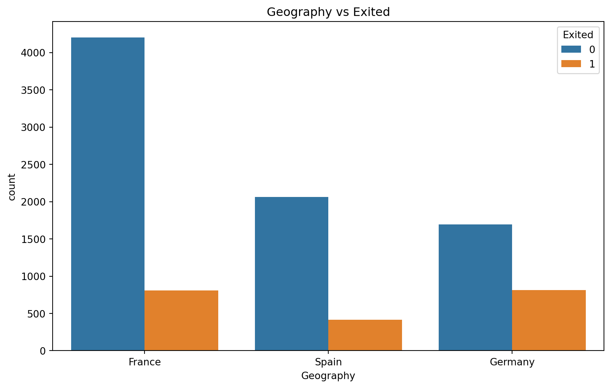
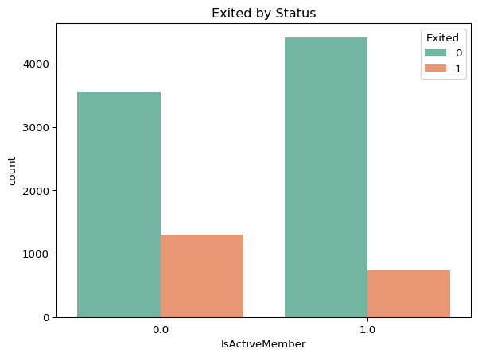
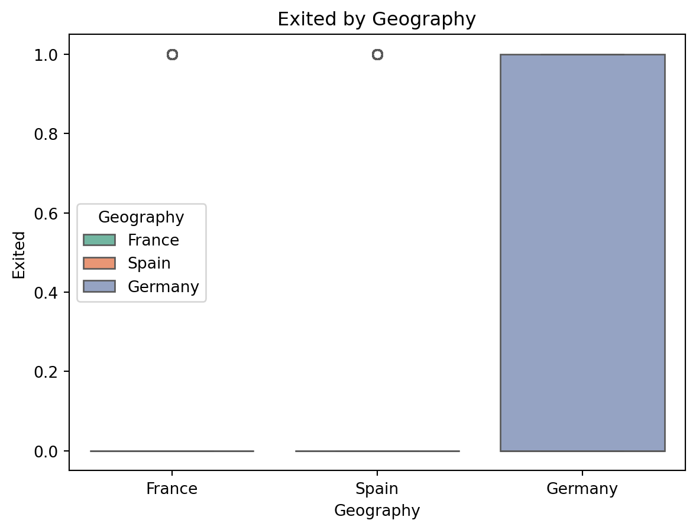
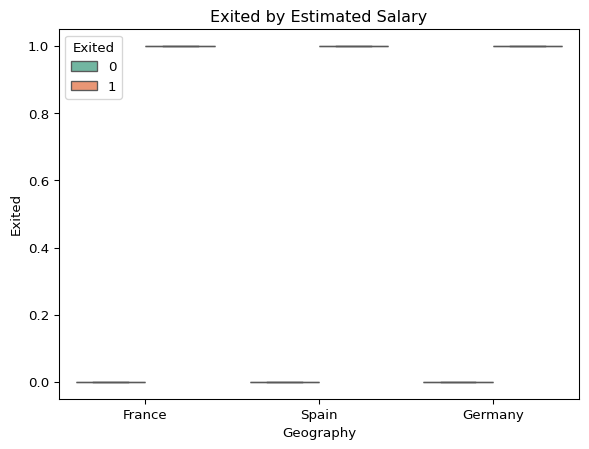

XGBoost Classification is a supervised machine learning algorithm that builds an ensemble of decision trees to predict categorical outcomes. It is optimized for speed and performance using gradient boosting techniques.
Definition
XGBoost (Extreme Gradient Boosting) is an advanced implementation of gradient boosting designed for efficiency and accuracy. It improves predictions by sequentially training trees while correcting previous errors. The key components include:
Boosting Trees: A collection of decision trees built sequentially to reduce errors.
Gradient Descent Optimization: Adjusts model weights using the gradient of a loss function.
Regularization: Controls model complexity to prevent overfitting.
For classification, XGBoost predicts categorical outcomes by minimizing a chosen loss function, such as logistic loss for binary classification or softmax (cross-entropy) loss for multi-class classification.
Key Concepts
1. Boosting Mechanism:
- Unlike a single decision tree, XGBoost builds multiple trees in sequence.
- Each new tree corrects the errors of the previous ones by focusing on misclassified examples.
Loss Functions:
Determines how errors are measured and minimized.
Common choices for classification include:
Logistic Loss – Used for binary classification tasks.
Softmax (Cross-Entropy Loss) – Used for multi-class classification tasks.
Regularization Techniques:
Prevents overfitting by adding penalties to complex models.
L1 Regularization (Lasso) – Encourages sparsity by shrinking coefficients.
L2 Regularization (Ridge) – Penalizes large coefficients to reduce variance.
Feature Importance & Selection:
XGBoost ranks features by importance, aiding in feature selection.
Helps in eliminating redundant or irrelevant features for better performance.
Pros
1. High Performance – Optimized for speed, scalability, and efficiency.
2. Handles Missing Data – Automatically learns how to deal with missing values.
3. Regularization Built-in – Reduces overfitting with L1 and L2 penalties.
4. Probabilistic Predictions – Provides probability scores for classification, enabling threshold tuning.
5. Works Well with Large Datasets – Efficient memory usage and parallel processing.
Cons
1. Complexity – More difficult to tune compared to simpler models.
2. Computationally Intensive – Training can be slow on very large datasets.
3. Sensitive to Hyperparameters – Performance depends on careful tuning of learning rate, tree depth, and regularization.
4. Less Interpretable – Decision boundaries may be challenging to interpret compared to simpler models.
Tips
* Optimize Hyperparameters – Use grid search or Bayesian optimization for tuning.
* Use Early Stopping – Stop training if performance ceases to improve on validation data.
* Scale Features if Needed – Although XGBoost can handle unscaled data, standardization might improve performance.
* Leverage Feature Importance – Identify and remove less relevant features to improve efficiency.
* Adjust Decision Thresholds – Fine-tune the probability threshold to balance precision and recall for your specific task.
Requirement already satisfied: lets_plot in /opt/hostedtoolcache/Python/3.12.11/x64/lib/python3.12/site-packages (4.7.0)
Requirement already satisfied: pypng in /opt/hostedtoolcache/Python/3.12.11/x64/lib/python3.12/site-packages (from lets_plot) (0.20220715.0)
Requirement already satisfied: palettable in /opt/hostedtoolcache/Python/3.12.11/x64/lib/python3.12/site-packages (from lets_plot) (3.3.3)
Requirement already satisfied: pillow in /opt/hostedtoolcache/Python/3.12.11/x64/lib/python3.12/site-packages (from lets_plot) (11.3.0)
# needed libraries for Classification modelsimport numpy as npimport pandas as pdfrom sklearn.model_selection import GridSearchCV, train_test_splitfrom sklearn.compose import ColumnTransformerfrom sklearn.preprocessing import OrdinalEncoderfrom sklearn.metrics import f1_scorefrom xgboost import XGBClassifierfrom collections import Counterimport seaborn as snsimport matplotlib.pyplot as plt# Load the training dataset#### If this gives an error go into the Data folder in GitHub and click on the data csv and then "Raw"#### (underneath history in the upper righthand corner) then copy that url to replace the "data_raw_url"data_raw_url ='Churn_Modelling.csv'banking_df = pd.read_csv(data_raw_url)
# 0 means staying and 1 means leaving.# Most customers who left the bank were from Germany compared to Spain and France. Does this indicate that geography significantly influences the decision to stay or leave?plt.figure(figsize=(10, 6))sns.countplot(x='Geography', hue='Exited', data=banking_df)plt.title('Geography vs Exited')plt.show()

sns.countplot(data = banking_df, x ="IsActiveMember", hue ="Exited", palette="Set2")plt.title("Exited by Status")plt.show()

sns.boxplot(data = banking_df, x ="Geography", y ="Exited", hue ="Geography", palette="Set2")plt.title("Exited by Geography")plt.show()

sns.boxplot(data = banking_df, x ="Geography", y ="Exited", hue ="Exited", palette="Set2")plt.title("Exited by Estimated Salary")plt.show()

Feature Enginnering and Data Augmentation
X = banking_df.drop(['Exited', 'Surname'], axis=1)y = banking_df['Exited']
Data Augmentation
Definition: Data augmentation is the process of artificially expanding the size and diversity of a training dataset by applying transformations or modifications to the existing data while preserving the underlying labels or structure. It is commonly used in machine learning, especially in computer vision and natural language processing, to improve model performance and robustness.
Feature Engineering
Definition: Feature engineering is the process of creating, modifying, or selecting relevant features (input variables) from raw data to improve the performance of a machine learning model. It involves transforming raw data into a format that makes it more suitable for algorithms to learn patterns.
categorical_features = ['Geography', 'Gender']
Machine Learning Model
Split the data to train and test
X_train, X_test, y_train, y_test = train_test_split(X, y, test_size=0.2, random_state=42)
Create the model
# Create an ordinal encoderordinal_encoder = OrdinalEncoder()# Create a column transformer to apply ordinal encoding to categorical featurespreprocessor = ColumnTransformer( transformers=[ ('cat', ordinal_encoder, categorical_features) ], remainder='passthrough'# Keep other columns unchanged)
Train the model
# Fit and transform the training dataX_train_encoded = preprocessor.fit_transform(X_train)# Transform the test data using the fitted preprocessorX_test_encoded = preprocessor.transform(X_test)
Make predictions
# Initialize the XGBoost classifierxgb_classifier = XGBClassifier(random_state=42)
Hyperparameter Search
# Define the parameter grid for hyperparameter tuningparam_grid = {'learning_rate': [0.01, 0.1, 0.2],'n_estimators': [100, 200, 300],'max_depth': [3, 5, 7],}# Perform GridSearchCVgrid_search = GridSearchCV(estimator=xgb_classifier, param_grid=param_grid, cv=3, scoring='f1')grid_search.fit(X_train_encoded, y_train)# Get the best model from GridSearchCVbest_xgb_classifier = grid_search.best_estimator_# Make predictions using the best modely_pred = best_xgb_classifier.predict(X_test_encoded)
Evaluate the Model
Accuracy – The percentage of total predictions that are correct.
Example: If a spam filter correctly classifies 90 out of 100 emails (whether spam or not), the accuracy is 90%.
F1 Score – Out of all the positive predictions, how many were actually correct.
Example: If a spam filter predicts 20 emails as spam, but only 15 are actually spam, precision is 15/20 = 75%.
Recall Score – Out of all the actual positive cases, how many did the model correctly identify.
Example: If there were 25 spam emails in total, and the model correctly identified 15 of them, recall is 15/25 = 60%.
Precision Score – A balance between precision and recall (harmonic mean).
Example: If precision is 75% and recall is 60%, F1 score is (2 × 75 × 60) / (75 + 60) = 66.7%.
# Evaluate the model using classification metricsfrom sklearn.metrics import mean_squared_error, r2_score, mean_absolute_error# Calculate Mean Squared Error (MSE)mse = mean_squared_error(y_test, y_pred)# Calculate Root Mean Squared Error (RMSE)rmse = np.sqrt(mse)# Calculate Mean Absolute Error (MAE)mae = mean_absolute_error(y_test, y_pred)# Calculate R-squared (R2)r2 = r2_score(y_test, y_pred)# Print the evaluation metricsprint('Mean Squared Error (MSE):', mse)print('Root Mean Squared Error (RMSE):', rmse)print('Mean Absolute Error (MAE):', mae)print('R-squared (R2):', r2)
Mean Squared Error (MSE): 0.14642678660669664
Root Mean Squared Error (RMSE): 0.38265753175221395
Mean Absolute Error (MAE): 0.14642678660669664
R-squared (R2): 0.08790475390402563